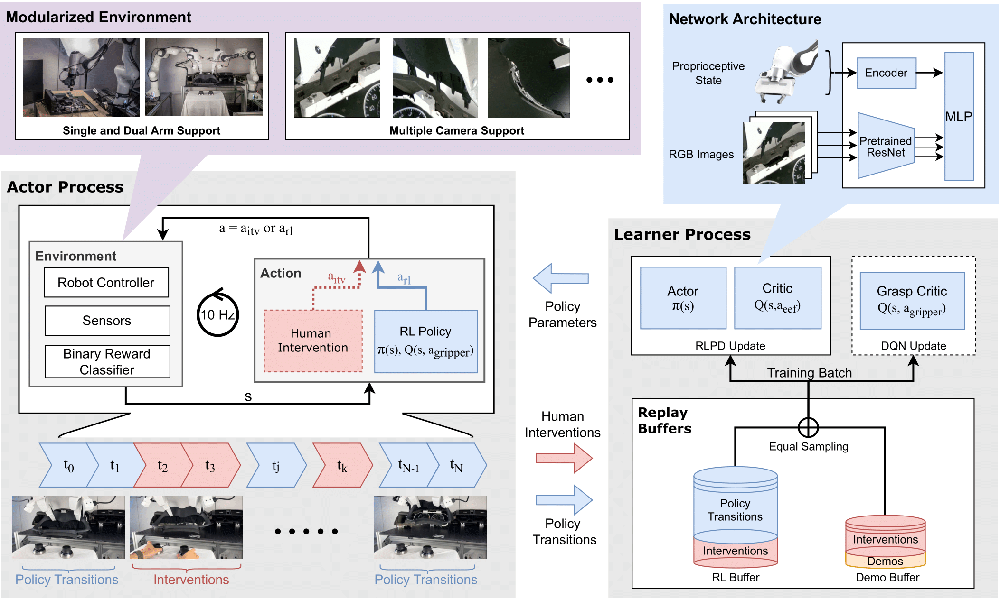
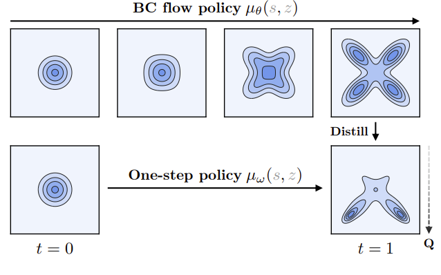
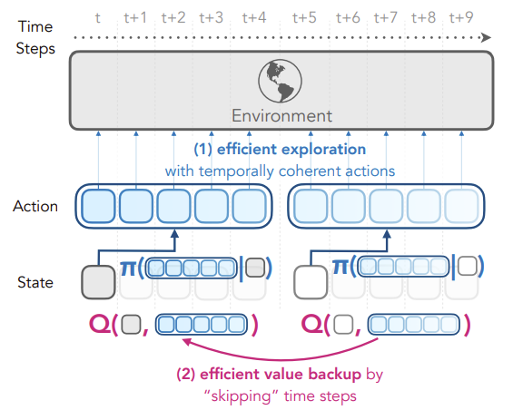
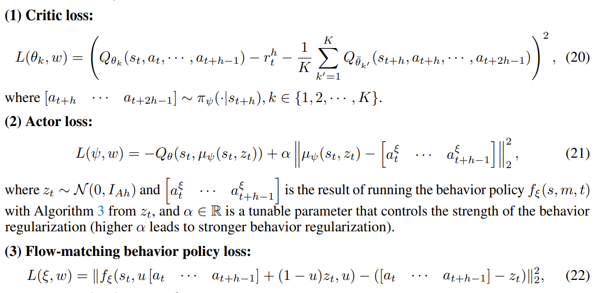

# Reinforcement Learning with Action Chunking & Human-in-the-Loop in LeRobot Juan Pizarro https://linkedin.com/in/jpizarrom/ <small>Hacker Room Demo Day - Dec 2025</small> --- [Juan Pizarro](https://linkedin.com/in/jpizarrom/) - Deep dive and R&D focused on RL & Robotics - Former (Selected): - MLE @ [Holocene](https://holocene.eu/) - SWE @ [FlixMobility](https://flixbus.com/) - Master's in AI @ [Universitat Politècnica de València](https://www.upv.es/estudios/master/muiarfid/) - Lead Software Engineer @ [Admetricks](https://admetricks.com/) <small>recently acquired by Similarweb</small></small> - Lead Software Engineer @ [A-Dedo](https://allrideapp.com/) - Computer Science Engineer @ [Universidad de Talca](https://www.utalca.cl/en/) --- # LeRobot merged HIL-SERL Jun 2025  <small>HIL-SERL: Precise and Dexterous Robotic Manipulation via Human-in-the-Loop Reinforcement Learning (Oct 2024) https://arxiv.org/abs/2410.21845</small> --- # Push Cube: HIL-SERL SAC <video controls muted autoplay loop> <source src="push-cube-slides.mp4" type="video/mp4"> Your browser does not support the video tag. </video> <small>[More info](https://www.linkedin.com/posts/jpizarrom_lerobot-lerobot-hackathon-activity-7340867714963451904-4TyW?utm_source=share&utm_medium=member_desktop&rcm=ACoAAAGa8sABWPeYPEmnbrttY0kcm7RRjf9QG_0)</small> -- Top 10 at Hugging Face LeRobot Worldwide Hackathon. **Task:** - Push cylinder into target & retract without disturbing it. Avoid excessive force on boundary tape. **Methodology:** - **Algorithm:** HIL-SERL (SAC) on SO-100 Arms. - **Training:** 40 episodes, 80k steps (~10k seconds). -- **Outcome:** - Model learned to handle physical constraints. - Successfully completed the sequence autonomously. --- # Flow Q-Learning & Action Chunking  <small>Flow Q-Learning (Feb 2025) https://arxiv.org/abs/2502.02538</small> --- # Reinforcement Learning with Action Chunking  <small>Reinforcement Learning with Action Chunking (Jul 2025) https://arxiv.org/abs/2507.07969</small> -- # QC-FQL  <small>Reinforcement Learning with Action Chunking (Jul 2025) https://arxiv.org/abs/2507.07969</small> --- # ACFQL Pick-and-Place <video controls muted autoplay loop> <source src="pick-and-place-cube-slides.mp4" type="video/mp4"> Your browser does not support the video tag. </video> <small>https://github.com/huggingface/lerobot/pull/1818</small> <small>[More info](https://www.linkedin.com/posts/jpizarrom_reinforcementlearning-machinelearning-robotics-activity-7372300995369836545-uPQ4?utm_source=share&utm_medium=member_desktop&rcm=ACoAAAGa8sABWPeYPEmnbrttY0kcm7RRjf9QG_0)</small> -- **Goal:** Pick up cubes and place them in a designated area. **Methodology:** QC-FQL (ACFQL) in LeRobot via WSRL (Offline -> Online). **Training:** - **Offline:** 100k optimization on 40 successful episodes - **Online:** 3 phases - pick one cube: - 12k optimization steps online at 0.7Hz: - 781 episodes, 126422 transitions - pick two cubes: - 12k optimization steps online at 0.7Hz - 449 episodes, 130000 transitions - pick three and four cubes: - 12k optimization steps online at 0.7Hz - 522 episodes, 127103 transitions -- **Notes:** - Frequent human interventions required needed. - Switched teleop from leader arm to keyboard - Changed gripper orientation multiple times - Adjusted end_effector_bounds, end_effector_step_sizes, and fixed_reset_joint_positions during online finetuning many times --- # ACFQL on Franka arm 8d <video controls muted autoplay loop> <source src="pick-and-place-franka-slides.mp4" type="video/mp4"> Your browser does not support the video tag. </video> <small>Humanoid Manipulation Hackathon https://luma.com/0bwvwejk?tk=ZrmKdy</small> <small>[More info](https://www.linkedin.com/posts/jpizarrom_robotics-reinforcementlearning-embodiedai-activity-7375897955939074050-VLhm?utm_source=share&utm_medium=member_desktop&rcm=ACoAAAGa8sABWPeYPEmnbrttY0kcm7RRjf9QG_0)</small> -- **Event:** Humanoid Manipulation & AI Hackathon, Munich. **Methodology:** - **Setup:** Defined safety limits (virtual fence). - **Training:** Overnight offline training (40 demos) + Online HIL interventions. - **Teleop:** Keyboard with delta actions. -- **Achievement:** Integrated Franka arms into ACFQL in LeRobot in **3 days**. **Outcome:** - Trained pick-and-place policy on industrial hardware in hackathon timeframe. --- # ACFQL + gripper rotation 7d <video controls muted autoplay loop> <source src="pick-and-place-cube-rotation-slides.mp4" type="video/mp4"> Your browser does not support the video tag. </video> <small>[More info](https://www.linkedin.com/posts/jpizarrom_lerobot-robotics-ai-activity-7391492153967005697-NVzJ?utm_source=share&utm_medium=member_desktop&rcm=ACoAAAGa8sABWPeYPEmnbrttY0kcm7RRjf9QG_0)</small> -- **Behavior:** Policy rotates gripper to align with cube geometry. **Configuration:** - **Input:** 2 Cameras (128x128), Proprioception. - **Teleop:** Gamepad with delta actions. **Training:** - **Offline:** - 400 successful episodes - 500k optimization steps - **Online:** - 5k initial transitions from the offline RL policy - no offline data is used during online RL - 5k optimization steps at 1.4hz <small>[s1lent4gnt](https://github.com/s1lent4gnt) refactored ACFQL to follow the paper's code more strictly and improved training speed</small> --- # Multi-Stage Pick-and-Place 20FPS <video controls muted autoplay loop width="80%"> <source src="pick-and-place-close-drawer-slides.mp4" type="video/mp4"> Your browser does not support the video tag. </video> <small>[More info](https://www.linkedin.com/posts/jpizarrom_lerobot-robotics-ai-activity-7395201262834618368-eAkn?utm_source=share&utm_medium=member_desktop&rcm=ACoAAAGa8sABWPeYPEmnbrttY0kcm7RRjf9QG_0)</small> -- **Task:** Pick object -> Place in drawer -> Close drawer. **Training:** - **Offline:** - 160 successful episodes - trained for 500k optimization steps - **Online:** - 5k initial transitions from the offline RL policy - 100k optimization steps at 8.5hz - 298 episodes, 132153 transitions - Interventions focused on "closing" motion and precise grasping. --- # Pick-and-Place and Stacking <video controls muted autoplay loop> <source src="pick-and-place-grocery-slides.mp4" type="video/mp4"> Your browser does not support the video tag. </video> <small>[More info](https://www.linkedin.com/posts/jpizarrom_lerobot-huggingface-robotics-activity-7398748715060137986-8L9d?utm_source=share&utm_medium=member_desktop&rcm=ACoAAAGa8sABWPeYPEmnbrttY0kcm7RRjf9QG_0)</small> -- **Task:** Stack two cubes with text facing outward (40s horizon). **Iterative Pipeline:** - **Teleop:** 100 demos with leader SO101 arm. - **Teleop:** 100 more demos with leader SO101 arm. - **Offline RL:** Trained initial policy on 200 demos. - **Online RL:** - Interventions with SO100 arm and gamepad teleop. - Generated 181 additional successful episodes - **Offline RL:** Combined 381 episodes. - **Online RL:** Further refinements. - Interventions gamepad teleop. -- **Outcome:** Iterative RL - Demo -> Offline -> Online -> Offline -> Online - increase dataset progressively with policy rollouts with interventions. - demonstrations and initial interventions using leader SO101 arm. - Transitioned to gamepad teleop when interventions became simpler. --- # VLA and RECAP-style Advantage Signals as BC <video controls muted autoplay loop width="25%"> <source src="pick-and-place-grocery-vla-slides.mp4" type="video/mp4"> Your browser does not support the video tag. </video> <small>Inspired on π∗0.6: a VLA That Learns From Experience (Nov 2025) https://arxiv.org/pdf/2511.14759</small> <small>[More info](https://www.linkedin.com/posts/jpizarrom_lerobot-huggingface-robotics-activity-7401974115819069440-_Dqm?utm_source=share&utm_medium=member_desktop&rcm=ACoAAAGa8sABWPeYPEmnbrttY0kcm7RRjf9QG_0)</small> -- **Experiment:** VLA model as Behavior Cloning actor in ACFQL + HIL-SERL. **Methodology:** - **BC Actor:** SmolVLA finetuned with **RECAP-style advantage signals**. **Work in Progress:** - Train value net with return to go/MC returns, continous V(s) estimates. - Train a critic with Q-Chunking: Q(s_t, a_t ... a_t+H) - Calculate advantages for A(s,a) = Q(s,a) - V(s) - Binarization of advantages for RECAP-style BC loss. - Label Dropout: Randomly set ~10% of labels to null to learn unconditional distribution for BC/VLA - Guided denoise from CFG (conditional (good) path) for distilling VLA/BC into the one-step actor - QWR on the one-step actor with Flow Q-learning **Preliminary Results:** - **Efficiency:** Improved behavior after just **10k optimization steps**. - **Insight:** Pretrained knowledge accelerates learning vs learning from scratch. - **Distillation:** VLA (BC) guided policy learning. --- # References <small>https://github.com/huggingface/lerobot</small> <small>https://huggingface.co/docs/lerobot/hilserl</small> <small>HIL-SERL: Precise and Dexterous Robotic Manipulation via Human-in-the-Loop Reinforcement Learning (Oct 2024) https://arxiv.org/abs/2410.21845</small> <small>Flow Q-Learning (Feb 2025) https://arxiv.org/abs/2502.02538</small> <small>Reinforcement Learning with Action Chunking (Jul 2025) https://arxiv.org/abs/2507.07969</small> <small>π∗0.6: a VLA That Learns From Experience (Nov 2025) https://arxiv.org/pdf/2511.14759</small> <small>WSRL: Efficient Online Reinforcement Learning Fine-Tuning Need Not Retain Offline Data https://arxiv.org/abs/2412.07762</small> <small>[HIL-SERL] Add Flow Q-learning (FQL) agent with action chunking https://github.com/huggingface/lerobot/pull/1818 [refactored by s1lent4gnt to follow paper more strictly](https://github.com/s1lent4gnt) </small> <small>UCBerkeley CS 285: Deep Reinforcement Learning 2023 (UC Berkeley) https://www.youtube.com/playlist?list=PL_iWQOsE6TfVYGEGiAOMaOzzv41Jfm_Ps</small> <small>Robot Learning 2025: Foundational Models for Robotics and Scaling DeepRL https://www.youtube.com/playlist?list=PLMe2pHxzxHp-UJ1jd-uuGSGK7P7Phtm-f</small>